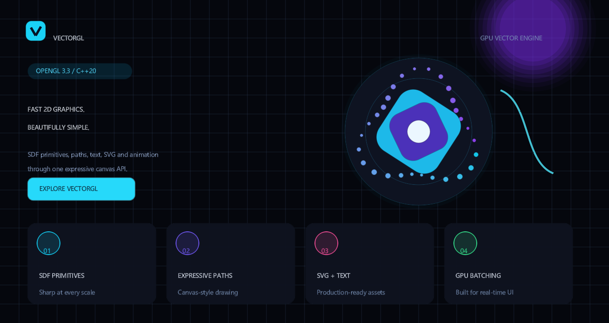
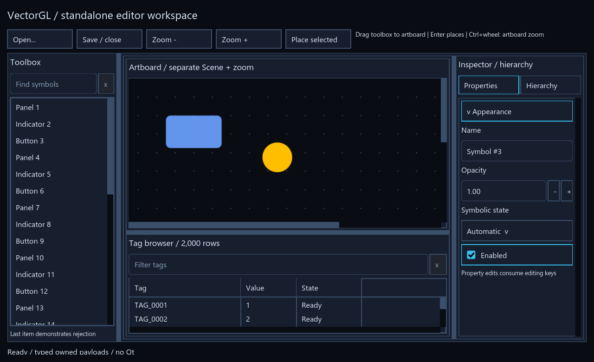

From a single shape
to a full interface.
Draw with Canvas. Compose with Scene. Build with UI.
One C++20 library, powered by OpenGL.

Your frame loop.
Your rendering surface.
Direct when you want it.
Structured when you need it.
Mix drawing, scene objects and controls in the same application. Each API has a clear job, with a shared OpenGL renderer underneath.
Canvas↗
IMMEDIATE MODEIssue drawing commands each frame. Shapes, paths, text, images and SVG, in the order you choose.
For charts, overlays & custom visuals02Scene↗
RETAINED MODEKeep objects alive. Compose hierarchies, inherit transforms and animate properties over time.
For animated scenes & interactive objects03UI↗
APPLICATION LAYERLay out controls, route input and manage focus. Lists, trees, tables and panels, ready to compose.
For inspectors, workspaces & editorsA real interface.
Not just a drawing demo.
Build around your application: a separate Scene artboard, routed controls, resizable panels and virtualized collections. No Qt dependency.

Split panels, scrolling, themes, overlays and keyboard focus.
Typed drag/drop, scene picking and separate artboard zoom.
Use your event loop and document model. Connect persistence yourself.
The code is the interface.
Familiar C++ calls, explicit lifetimes and a CMake target for each module. Start with a shape, then add the structure your application needs.
Pick your starting point.
Canvas for drawing. Scene for persistent objects. UI for input and controls. The examples use the actual public API.
// Inside your OpenGL frame.
canvas.beginFrame(fbWidth, fbHeight);
canvas.setFillColor(vectorgl::Color::hex(0xA6E35C));
canvas.fillRoundedRect(24, 24, 280, 140, 18);
canvas.setFillColor(vectorgl::Color::White);
canvas.fillCircle(164, 94, 36);
canvas.endFrame();// Create once, then update persistent objects.
vectorgl::Scene scene(canvas.renderer());
auto card = scene.roundedRect(24, 24, 280, 140, 18);
card->setFill(vectorgl::Color::hex(0xA6E35C));
card->setPosition(80, 60);
// During an active Canvas frame.
scene.render();// Context outlives the controls it owns.
vectorgl::ui::Context ui;
vectorgl::ui::ButtonOptions options;
options.label = "Save document";
options.onActivated = [] { /* Application save hook. */ };
vectorgl::ui::Button save(ui, {}, options);
ui.setBounds(save.id(), {24, 24, 180, 44});
// Forward host input; paint inside a Canvas frame.
ui.dispatch(event);
ui.paint(canvas, viewport);Small primitives.
Useful possibilities.
Crisp geometry
SDF primitives, Bézier paths, fill rules and configurable strokes.
Text with intent
Unicode glyphs, kerning, wrapping and hinted small-text coverage.
Depth and motion
Tweens, springs, clipping, blur, glow and shadows.
Connected controls
Focus, capture, modal scopes and invalidation-driven painting.
Add VectorGL.
Start making things.
Canvas, UI, the GLFW adapter and native dialog backends build by default. Tests, examples and apps stay off until you enable them.
include(FetchContent)
FetchContent_Declare(vectorgl
GIT_REPOSITORY https://github.com/mahtab04/vectorgl.git
GIT_TAG 22975c2e4a252e196c19616028f390e6d2fee3ab
)
FetchContent_MakeAvailable(vectorgl)
target_link_libraries(my_app PRIVATE vectorgl::ui)Pinned to a reviewed revision. Use your own OpenGL context and event loop.